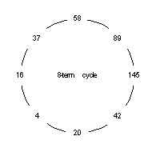

Happy & Dizzy Numbers |
Of course, there are all kinds of recurrent operation rules in mathematics. Another important rule is "multiply each result by 2". If we used 1 as our first number, this sequence shows up: 1, 2, 4, 8, 16, 32, ... ; this list is the also famous "powers of two". So, you see it's really not such a difficult idea now, is it?
However, in order to produce "happy numbers", we will invent a rule that is just a little bit more complicated. (After all, you didn't expect this to be that easy, did you?) Our rule now will be given in two steps: (1) find the squares of the digits of the starting number; then (2) add those squares to get the result that will be used in the repeat part of your work.
Here is an example. Let's start with 375. We write:
Now we repeat the R.O. procedure with 83. This gives us:
Of course, we continue with 73. This will produce 58.
It's that easy! When you reach a 1, the starting number is called happy. [But don't ask why it's happy, instead of sad; that's just what the books say.]
Once you determine a number is happy, you can say all the intermediate results are also happy. The numbers 13 and 10 must also be considered as happy, because they too produce a 1.
Can you find some more happy numbers? Yes. If you know a certain number is happy, it's easy to find many more. How? One way is to insert a zero or two. Look: above we saw that 23 was happy, right? This means that 203 is also happy; so is 230. A larger example is 2003. See? Now you can make many, many happy numbers, using an old one with as many zeros as you wish.
But that's the easy way. You want something a bit more challenging, don't you? Well, that's your task now -- find some more happy numbers without using the "zeros" technique. Okay?
The term "dizzy numbers" was invented by me. It is based on an idea that should occur to anyone searching for happy numbers, because often they find themselves "going in circles", literally, i.e. getting dizzy. Here's why:
 Recall the number 375 from above? It produced the sequence 83, 73, 58,... But we stopped there in our explanation of the RO procedure. If we had continued, we would have had 89, 145, 42, 20, 4, 16, 37, and then back to 58! Hmm... now that's strange, isn't it? We've returned to where we were (58) just eight steps earlier; we've gone in a circle. We've produced an 8-term numerical cycle. Hence, we're getting a little dizzy. (Get it?)
So we can now define more formally a dizzy number to be one that is either part of that cycle or produces a sequence that enters the cycle eventually (like 375 did).
Now, do you want to hear something really strange? All numbers that are not happy are dizzy! That's right. No matter how big or small a number may be, if you use the sum-of-the-squares-of-the-digits RO procedure on it, you either reach a 1 or the 8-term cycle. Amazing, isn't it?
Now armed with this new knowledge, you are ready to classify any number as happy or dizzy.
Have fun!
For more activities about recurrent operations, go to Kaprekar or Ulam.
| Comments? Send e-mail. | Back to top | Go back to Home Page | Go back to Contents |